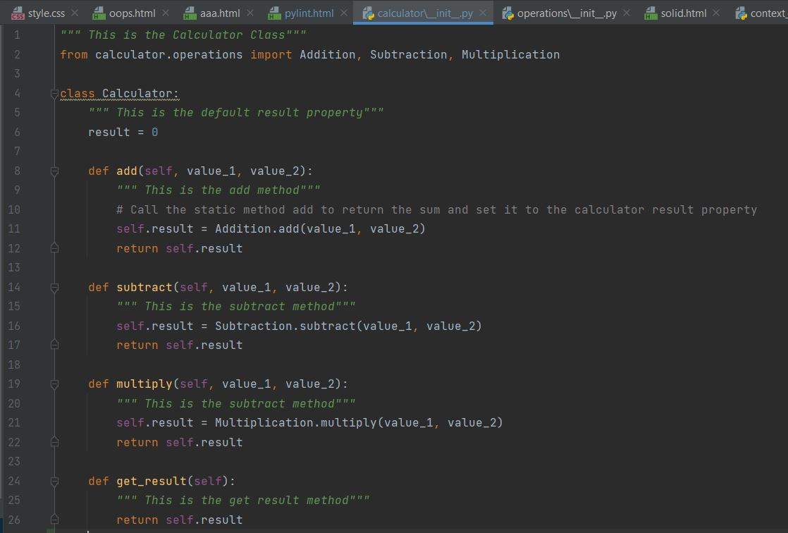
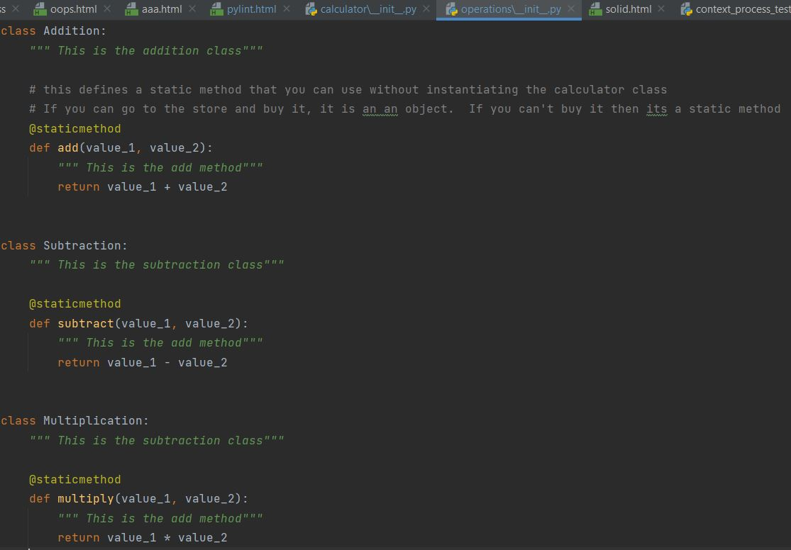

Encapsulation is the bundling of data, along with the methods that operate on that data, into a single unit. Many programming languages use encapsulation frequently in the form of classes. The calculator program demonstrates encapsulation because it is a bundling of data and related methods that combine into one single unit, which is the calculator code itself. In calculator\_init_.py, the class Calculator has the methods add, subtract, multiply, and get_result. Adding on, in operations\_init_.py are the classes for Addition, Subtraction, and Multiplication. All of these classes and methods bundled together make up the Calculator program.
 An OOP technique that allows one class to inherit the attributes and methods of another class. In an inheritance relationship, the parent class can also be referred to as the superclass or base class. The child class can be referred to as the subclass or derived class. In the Calculator program, Inheritance is demonstrated through calculator\_init_.py and operations\_init_.py. In calculator\_init_.py, the Addition, Subtraction, and Multiplication classes were imported from operations\_init_.py. Because of this, the methods from operations\_init_.py were inherited and used in the methods in the Calculator class in calculator\_init_.py.
A feature of object-oriented programming languages that allows a specific routine to use variables of different types at different times. Polymorphism is the ability of a programming language to present the same interface for several different underlying data types. Polymorphism can be seen in the Calculator program in the calculator folder. In operations\_init_.py, the classes Addition, Subtraction, and Multiplication with the methods add, subtract and multiply. With polymorphism, the same classes are able to be used in calculator\_init_.py without having to rewrite them in that file. Because of polymorphism, you are able to import the classes from calculator.operations.
Abstraction is one of the four cornerstones of Computer Science. It involves filtering out or ignoring the characteristics that we don't need in order to concentrate on those that we do. Abstraction is demonstrated in the Calculator program because in calculator\_init_.py, the classes for Addition, Subtraction, and Multiplaction are called without showing the details of the contents for those classes. Although the methods from those classes are being used, you don't see what those methods actually do while looking at calculator\_init_.py. This is because the source code is in operations\_init_.py.